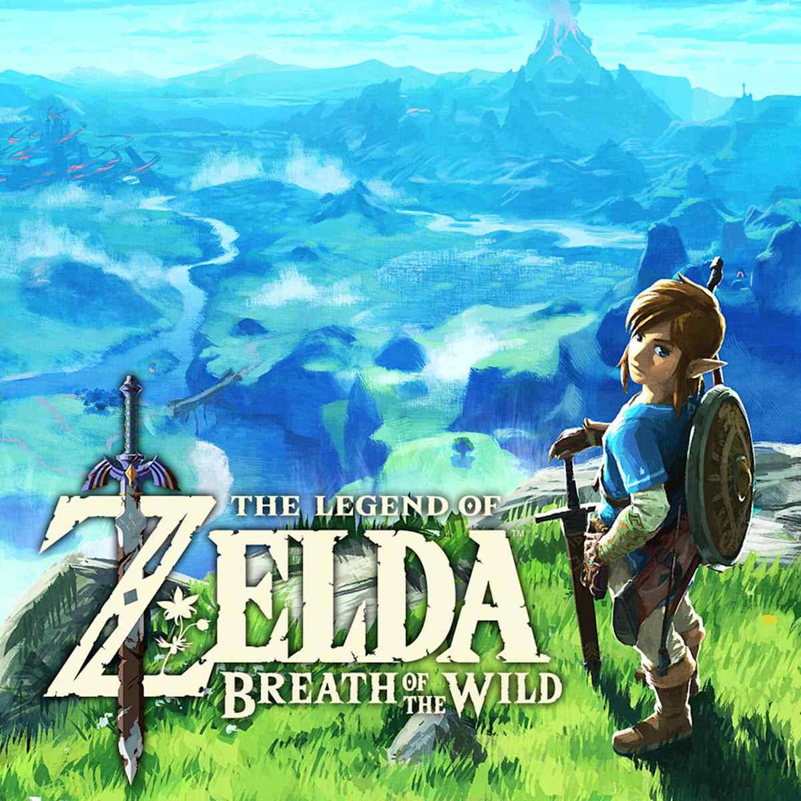

(!) Scroll through the text below to keep reading
Game Review: Review: Phew, this game has been released for a long time, almost 10 years! Just wanted to give you the heads up fellow Legend of Zelda Fans that this was my first game in the franchise. Personally, while playing I found all the puzzles especially the shrines to scratch my puzzle itch! Not only this but I love love collecting items whether cooking, clothing, items, pictures, and more this game has. I found myself so engrossed in the story and its combat gameplay that I couldn’t put the game down. The artstyle and aesthetic of the game I also found to be so cute. All the music within the game too was perfect transporting me to the fantasy game. The combat was so much fun especially with the spoiler: shield gliding, slowing of time*, and varying weapons. The only complaint I had was the amount of side quests! However, I guess that’s what has kept me coming back to the game for more. And of course it's said that the price and lack of platforms to play the game is what has held many people other than myself back. If you’re looking for a game that has a great aesthetic, silly combat, and immersive storytelling play this game!
(?) Rating Help: Squares are grayed out = no stars. A blue dot = one star. More squares = Good